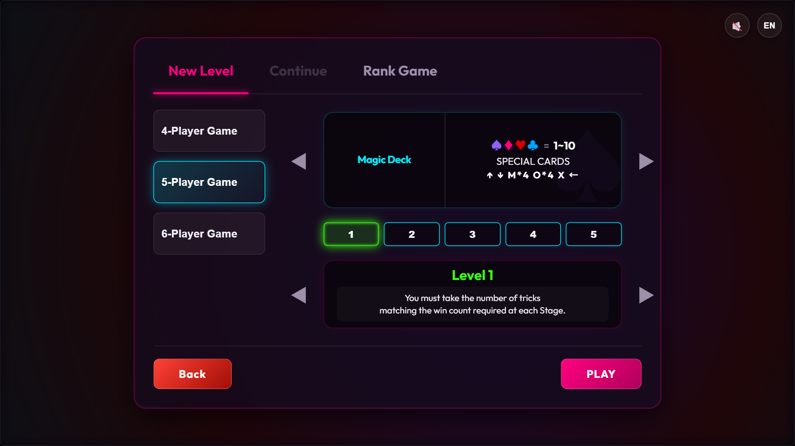
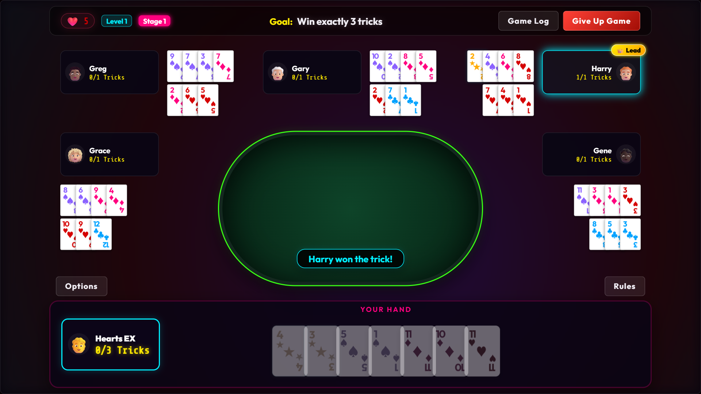

August ended up being a month where far more unfolded than I had ever anticipated.
Back in July, I genuinely believed the game was practically finished and that August would be dedicated entirely to promotional outreach and community building. However, my very first post on Reddit—meant to introduce the game to strategy fans—met with an immediate, stinging reality check.
1. The Harsh Reality of Reddit Feedback
When I initially brought the game to life, I was genuinely satisfied with the original UI and artwork generated through Antigravity. To my eyes, it felt functional and cohesive.
The online gaming community, however, saw things very differently. Commenters bluntly characterized the visuals as looking like generic "AI slop." Beyond those harsh reactions, there was virtually no positive engagement with the core design.
"The commenters bluntly characterized the visuals as generic AI slop. It was a painful moment, but one that forced an essential evolution."
2. A Solo Developer's Blindspot: Designer vs. Director
After absorbing that sting, I spent long hours in self-reflection. I had to ask myself: To what extent had I truly acted as the creative director of this game?
As someone building a digital video game entirely solo for the first time, I realized I had approached production wearing only my familiar board game designer's hat. In the tabletop publishing world, when a publisher licenses your game prototype, their in-house team takes over the visual direction, hiring professional illustrators and graphic designers to package the product beautifully. Accustomed to that division of labor, I had spent over a month concentrating solely on the mathematical elegance of the game mechanics, assuming the raw visuals would suffice.
In solo indie video game development, however, you cannot outsource aesthetic responsibility. You are not merely the systems designer—you are the game director responsible for every pixel and player impression.
3. Major Architectural Pivot & Scrapping the Roguelike Framework
Around that same time, insightful feedback from close playtesters surfaced a deeper systemic problem.
When I began development, I had ambitious plans to blend trick-taking with roguelike run mechanics. But seeing real players interact with the game revealed an inescapable conclusion: the roguelike progression was actively clashing with the pure, deterministic deductive puzzle experience I wanted to create.
All of this converged in early August. I had believed the finish line was in sight, but suddenly I faced the reality that both the game's core architecture and its entire visual presentation needed to be completely rebuilt. With Steam Next Fest scheduled for October, the pressure was immense.
Interestingly, when I initially asked AI to estimate the schedule for this massive rework, it projected several months of work—calculating based on standard human developer velocity. When I asked how fast it could accomplish the tasks under my direct steering and prompt architecture, a realistic and achievable timeline emerged.

The restructured lobby and deck selection system after the August overhaul.
4. Multi-AI Orchestration: Claude, Codex, and Antigravity
Around this time, a fortunate coincidence occurred: my wife decided to subscribe to ChatGPT to track her fitness routines, giving me simultaneous access to three distinct AI development tools—Claude, Codex, and Antigravity.
While the situation was urgent, navigating this period became one of the most fascinating creative experiences of my development journey: what is now broadly termed AI orchestration.
I benchmarked the distinct strengths of each tool and systematically assigned them specific roles within the pipeline:
- Claude (Lead Conductor & Art Director): Demonstrated superior high-level reasoning and creative intuition. Claude took charge of structural architectural decisions and generated the primary visual draft proposals.
- Codex (Heavy Engineering): Excelled at systematic, large-scale code refactoring and executing deep structural modifications to game logic.
- Antigravity (Simulation & Background Ops): Deployed for automated simulations, playtest balance verification, and repetitive background scripts.
For the visual overhaul, Claude drafted several distinct artistic directions. I selected the cleanest, most minimalist candidate, and Claude systematically guided the replacement of the entire asset catalog.

Clean, legible cards allow players to focus on tactical deduction without visual clutter.
5. Aesthetics That Serve the Deductive Puzzle
The outcome of that intense August sprint is the visual identity Hearts Extreme showcases today, and I am genuinely proud of it.
A minimalist aesthetic might still lead some to perceive it as having a "web game" feel, but I firmly believe this clean, understated approach is the ideal match for a pure card game. It eliminates visual noise so that players can immerse themselves entirely in tactical calculations, reading opponents' open hands, and finding the winning play.
I hope you enjoy playing Hearts Extreme as much as I enjoyed the journey of bringing it to life. That said, I have already promised myself one thing: for my next title, I will explore an entirely different visual realm!
Thank you for reading and following along with the making of Hearts Extreme!